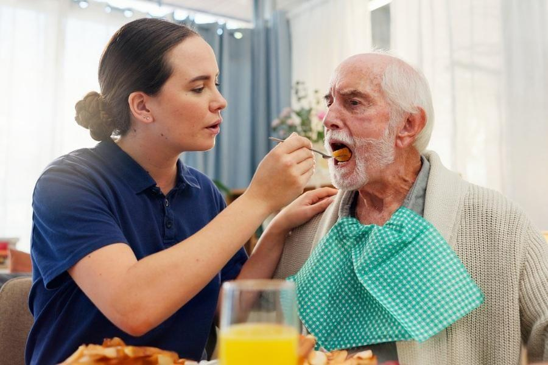
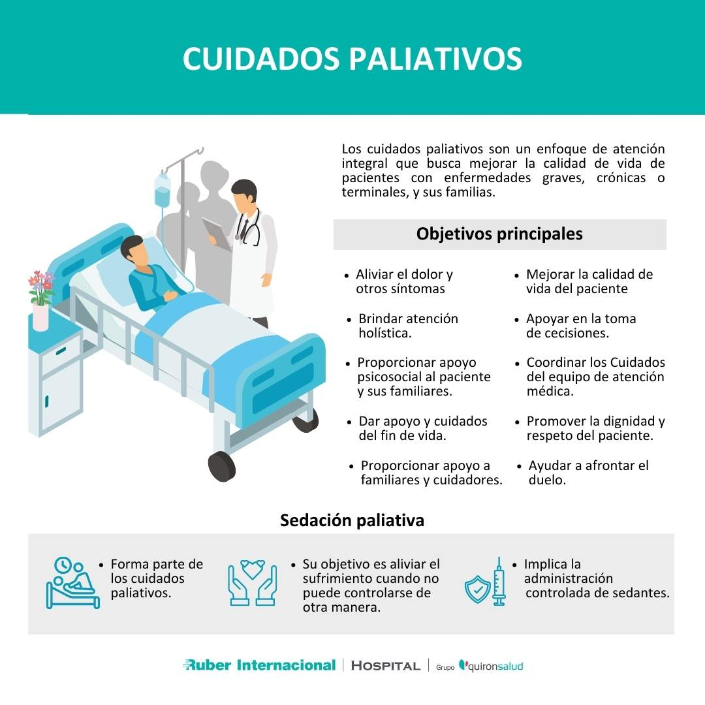
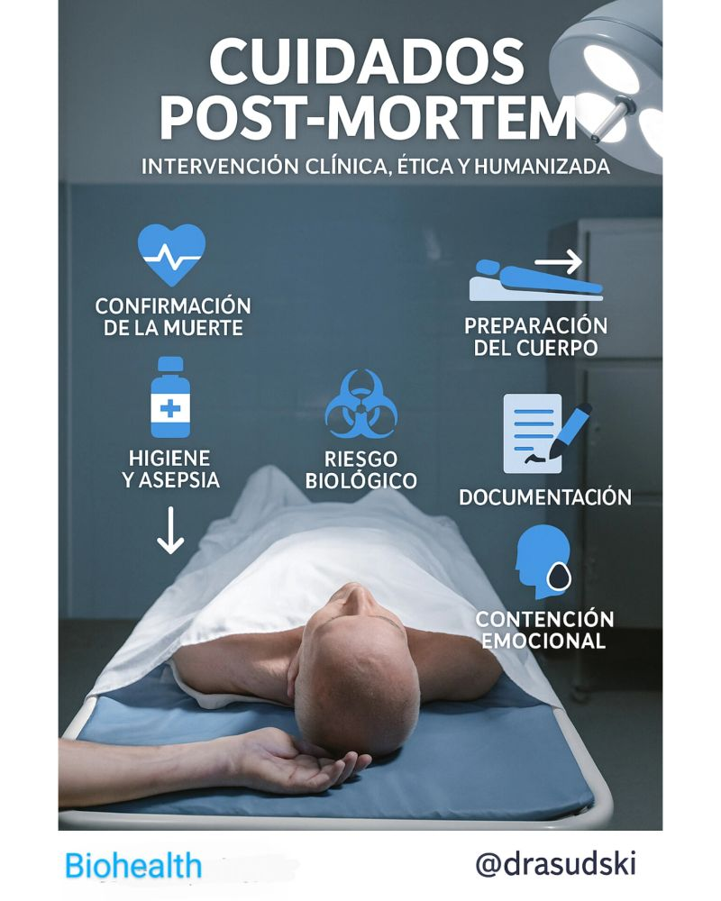

Recurso interactivo para TCAE con mapa conceptual desplegable, imágenes de apoyo y autoevaluación integrada.
1. Comprende
Cambios del anciano, fragilidad y patologías frecuentes.
2. Cuida
Intervenciones del TCAE con enfoque técnico y humano.
3. Evalúate
Test interactivo con corrección inmediata y puntuación.
Contenido organizado para conocer los aspectos y conceptos más importantes a tener claros de una forma ordenada
Bloque 1
Proceso biológico progresivo e irreversible con repercusión en todos los órganos y sistemas.
Bloque 2
Cambios físicos, funcionales, psicológicos y sociales que condicionan los cuidados.
Bloque 3
La pluripatología exige observación, prevención y apoyo continuado del TCAE.
Bloque 4
Actuaciones básicas, preventivas y seguras para mantener bienestar y autonomía.
Bloque 5
El objetivo deja de ser curar y pasa a aliviar, acompañar y preservar la dignidad.
Bloque 6
Comprender el duelo y aplicar el protocolo post mortem con respeto, técnica y seguridad.
Cómo estudiar este mapa
Empieza leyendo cada bloque y vas desplegando cada pestaña para abrirlo y ver su contenido
La página está preparada para mostrar imágenes con buena calidad, proporción estable y carga eficiente. Son fotografías sanitarias propias en alta resolución sólo para uso como recurso de aprendizaje.



El envejecimiento es un proceso biológico progresivo e irreversible que afecta a todos los sistemas, pero como especialistas debemos identificar la pluripatología y los cambios fisiológicos específicos que amenazan la autonomía:
Las preguntas se basan en el contenido del tema: envejecimiento, cuidados al anciano, paliativos, duelo y post mortem.
Resultado